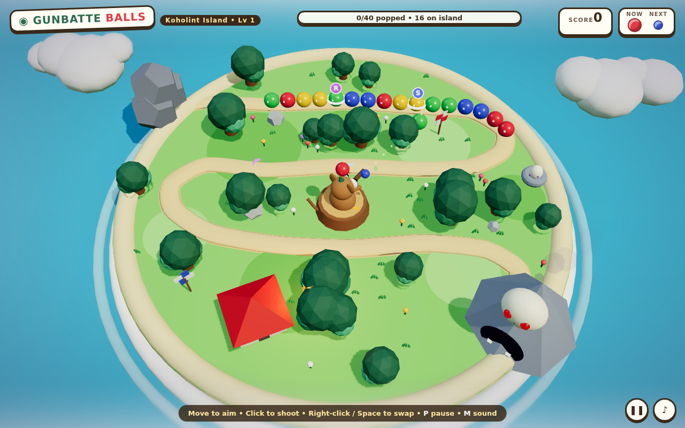
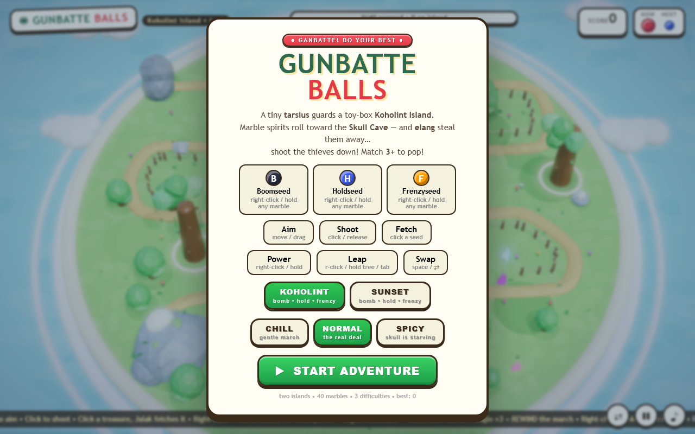
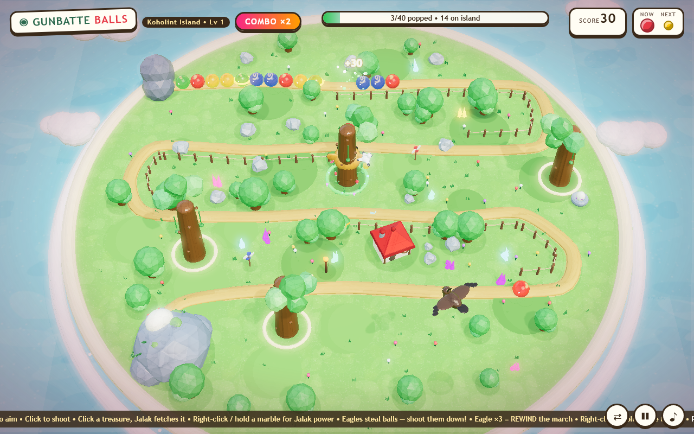
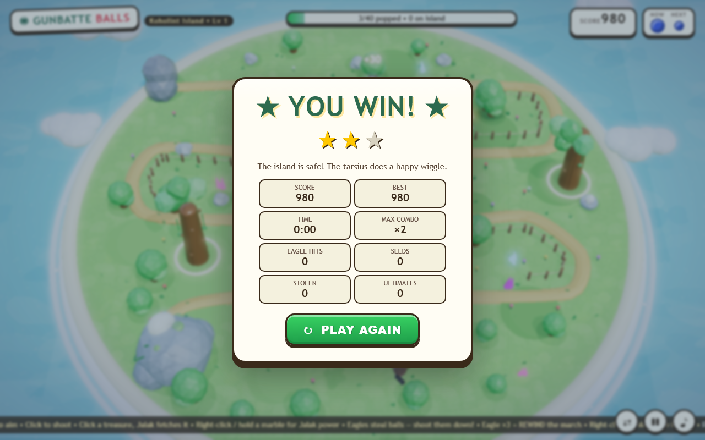

A tiny guardian. A hungry skull.
40 marbles rolling for the cave.
Aim the big-eyed tarsius, blast seed-shots, match 3 or more to pop — and detonate power seeds before the Skull Cave has its dinner. Three difficulties, one very determined island.
Free demo • one level • runs in your browser, no install

This trailer is the actual game, playing itself in attract mode — muted here, with full chiptune in the real thing. Take control →
Zuma's shooter is reborn as a huge-eyed Sulawesi tarsius in a straw hat — clinging to its perch tree, leaping between four trees with a mid-air spin, and wiggling with joy on every pop.
Boomseed blasts a crater in the chain. Chillseed slows the march. Rewindseed rolls time backwards. Snipe them directly — any color works.
A tilt-shift miniature island: wavy faceted water, chibi pines, pinwheels, a flickering torch, drifting clouds, butterflies — and a hidden Wind Fish egg.
A fully procedural chiptune — plucked pentatonic melody plus bass, synthesized live in WebAudio. Zero audio files, 100% island groove. M to mute.
Play instantly in your browser — or grab the offline bundle and host it anywhere.
One ZIP. The whole island: game, diorama, music engine, zero installs. Host it on itch.io, GitHub Pages, Netlify — or your laptop.
Windows • macOS • Linux — any modern browser with WebGL. Free forever.
Download & unzip
One folder, no installer.
Serve the folderpython3 -m http.server — or drop it on itch.io / Netlify Drop.
Ganbatte!
Open index.html over HTTP and defend the cave.
Heads-up: browsers block game files opened straight from disk — that “serve the folder” step is required (it’s one command, promise). The download page you’re reading right now is served the same way.
Every shot below is captured live from the actual game.



Move the mouse. The tarsius and its dotted sight follow.
Click a glowing tree — or press Tab — to leap between perches.
Click to fire a seed. Match 3+ colors to pop the chain.
Don't let a single marble reach the Skull Cave. Clear all 40!
| Mouse | aim the guardian |
| Click | shoot seed-shot |
| Right-click / Space | swap current & next seed |
| Menu | Chill to learn • Normal for real • Spicy for pain |
| P / Esc | pause |
| M | mute the island band |
★ Pro tip: thread 5 hits in a row for a streak bonus, and snipe power seeds directly — any color triggers them. Missing resets your streak, and every stray seed joins the chain. Ganbatte!
Eight centimeters of courage. Eats moths, fears nothing, wiggles when happy. Definitely not a frog.
It hungers for marbles. Its eyes glow when dinner approaches. Teeth brushed daily.
Somewhere on the beach sits a spotted egg. The Wind Fish sends its regards. Shhh.
Yes — one full level in three difficulties, free forever, right in your browser. No install, no account, no ads. Your best score is saved on your device. The ZIP download is free too.
There is no video file. The trailer embed is the real game running in attract mode — an autopilot aims, swaps, and snipes power seeds while cinematic title cards roll over it. Open index.html?attract=1 to see the raw feed.
Chill if you’re here for the diorama (gentle march, most players win). Normal for the real deal — winnable, but sloppy clicking feeds the chain and you will lose. Spicy if the skull looks hungry.
Any modern browser with WebGL (Chrome, Edge, Firefox, Safari). Keyboard + mouse recommended. It even runs on modest laptops. For the ZIP: unzip, serve the folder over HTTP (python3 -m http.server), done.
Seed marbles spawn with a letter badge. Shoot one directly with any color — or pop it inside a color match — to trigger Boom, Chill, or Rewind.
There are no audio files. Every note is synthesized live with the WebAudio API — a plucky pentatonic loop that starts when your adventure does.
An indie toy-box tribute built with Three.js: code, diorama, music engine and this very page. GunBatte Balls is a fan-made demo inspired by Zuma and The Legend of Zelda: Link’s Awakening.